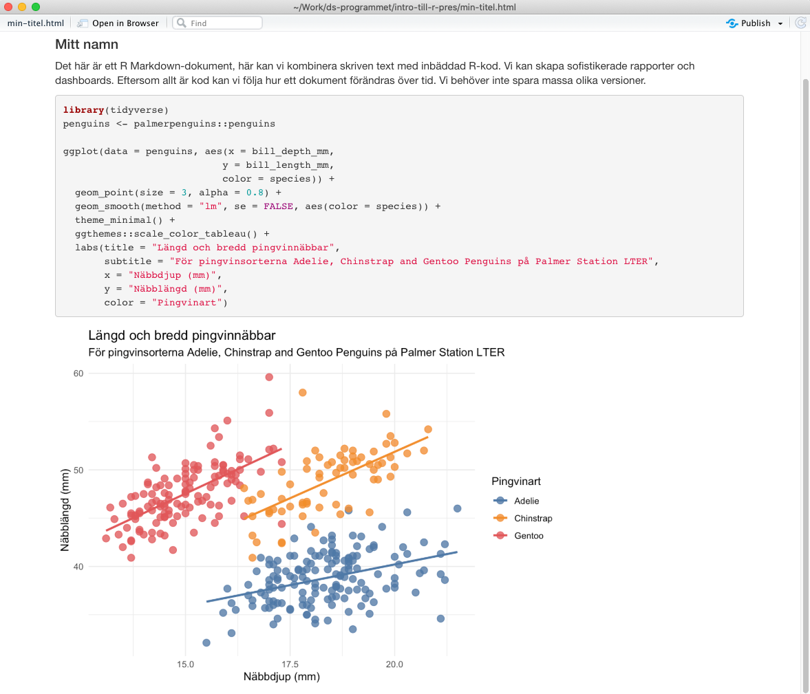

Kapitel 2 Introduktion till R
R är ett programmeringsspråk för dataanalys. Men R sträcker sig långt utöver enkla databearbetningar och statistisk modellering. Tack vare ett aktivt community har det utvecklats en stor mängd paket för att lösa många av de olika uppgifter en dataanalytiker kan tänkas ställas inför.
R kan i sin enklaste form användas som en miniräknare med +, -, / eller *.
Exempelvis:
100 + 4## [1] 104Eller:
4 * 6 - 2## [1] 22Beräkningar, eller alla former av manipuleringar kan sparas i så kallade objekt.
Exempelvis kan vi spara en av ovanstående beräkningar i objektet x med <- som kallas för the assign operator.
x <- 100 + 4
x## [1] 104Pilen <- kan även vändas på ->
100 + 4 -> x
x## [1] 104Du kan spara flera värden i ett objekt genom att omsluta dem med funktionen c() och separatera med , (c står för combine). Då kallas objektet för en vector.
x <- c(4, 100 + 4, 10 * 2)
x## [1] 4 104 20Objekt och vektorer är inte begränsade till numeriska värden utan kan även innehålla text.
text <- c("hej", "jag", "älskar", "r")
text## [1] "hej" "jag" "älskar" "r"Vi kan dock inte blanda text och numeriska värden. Då kommer R att tolka det som text.
blandat <- c(1, 5, "hej", 6)
blandat## [1] "1" "5" "hej" "6"2.1 Saknade värden (missing values)
Ett vanligt fenomen i data från verkligheten är saknade värden. Saknade värden representeras i R med NA.
NA är inte noll. Det är inte heller ett värde. Det är helt enkelt en indikation på att vi inte vet vilket värde som ligger där.
Det här upplevde i alla fall jag som lite förvirrande till en början.
Om vi har en vektor med NA:
x <- c(4, NA, 2, 50)Och kollar vilka värden som är större än 2.
x > 2 ## [1] TRUE NA FALSE TRUESå ser vi att vår observation med NA inte är TRUE eller FALSE utan helt enkelt NA.
Om vi vill kolla vilka värden som är NA borde vi kunna göra samma sak:
x == NA## [1] NA NA NA NADet här svaret känns kanske inte intuitivt men det här beror på att vi helt enkelt inte vet. Det går inte att utvärdera om x är NA.
Vi kan illustrera med ett exempel:
filips_ålder <- NA
helenas_ålder <- NA
filips_ålder == helenas_ålder## [1] NAÄr Filips ålder densamma som Helenas ålder för att vi saknar värdet? Nej, det går inte att veta.
Därför använder man i R istället is.na() för att undersöka om något är NA.
is.na(x)## [1] FALSE TRUE FALSE FALSENA är ett vanligt argument i funktioner. Ska vi exempelvis beräkna medelvärdet på vår vektor x som har NA i sig så får vi:
mean(x)## [1] NAEftersom vi saknar ett värde kan vi omöjligen veta vad medelvärdet för x är. Det saknade värdet kan vara vilken siffra som helst.
Därför kan vi i funktionen mean() välja att helt bortse från det saknade värdet:
mean(x, na.rm = TRUE)## [1] 18.666672.2 R är ett funktionellt programmeringsspråk
Vi använder oss hela tiden av funktioner i R. Vi kan skriva egna funktioner men oftast använder vi färdiga funktioner från paket med funktioner.
Funktionell programmering är bra för dataanalys. Ofta jobbar vi med data som vi vill manipulera om och om igen och funktioner är ett bra sätt att göra det på. På många sätt liknar R därför Excel som också jobbar mycket med funktioner.
2.2.1 Funktioner
Precis som i Excel finns det flertalet inbyggda statistiska och matematiska funktioner i R:
mean()median()sd()- …osv
Det finns också matematiska funktioner
log()sin()cos()- …osv
2.2.2 Dokumentation av funktioner
Funktioner innehåller också dokumentation om hur de fungerar.
För att komma åt dokumentation skriver du ett frågetecken innan funktioner.
?mean()2.2.3 Övning
- Använd några av R:s statistiska funktioner på en numerisk vektor
2.3 Data frames
- Det vanligaste formatet i R för dataanalys
- En data.frame är en rektangulär tabell med en eller flera kolumner
| year | month | day | dep_time | sched_dep_time | dep_delay | arr_time | sched_arr_time | arr_delay | carrier | flight | tailnum | origin | dest | air_time | distance | hour | minute | time_hour |
|---|---|---|---|---|---|---|---|---|---|---|---|---|---|---|---|---|---|---|
| 2013 | 1 | 1 | 517 | 515 | 2 | 830 | 819 | 11 | UA | 1545 | N14228 | EWR | IAH | 227 | 1400 | 5 | 15 | 2013-01-01 05:00:00 |
| 2013 | 1 | 1 | 533 | 529 | 4 | 850 | 830 | 20 | UA | 1714 | N24211 | LGA | IAH | 227 | 1416 | 5 | 29 | 2013-01-01 05:00:00 |
| 2013 | 1 | 1 | 542 | 540 | 2 | 923 | 850 | 33 | AA | 1141 | N619AA | JFK | MIA | 160 | 1089 | 5 | 40 | 2013-01-01 05:00:00 |
| 2013 | 1 | 1 | 544 | 545 | -1 | 1004 | 1022 | -18 | B6 | 725 | N804JB | JFK | BQN | 183 | 1576 | 5 | 45 | 2013-01-01 05:00:00 |
| 2013 | 1 | 1 | 554 | 600 | -6 | 812 | 837 | -25 | DL | 461 | N668DN | LGA | ATL | 116 | 762 | 6 | 0 | 2013-01-01 06:00:00 |
| 2013 | 1 | 1 | 554 | 558 | -4 | 740 | 728 | 12 | UA | 1696 | N39463 | EWR | ORD | 150 | 719 | 5 | 58 | 2013-01-01 05:00:00 |
Vi kan enkelt skapa våra egna data.frames.
data.frame(random_number = rnorm(5))## random_number
## 1 -0.0118082
## 2 0.4714646
## 3 1.4015425
## 4 -0.3244645
## 5 0.2342199En data.frame är ett bra sätt att spara en eller flera vektorer. De måste då vara exakt lika långa.
data.frame(x = c(1,2,3),
y = c("hej", "på", "dig"))## x y
## 1 1 hej
## 2 2 på
## 3 3 digOm du sparar vektorerna som två objekt kan du enkelt göra dem till den data.frame.
siffror <- c(5,1,2,5)
ord <- c("vad", "var", "det", "där")
data.frame(siffror, ord)## siffror ord
## 1 5 vad
## 2 1 var
## 3 2 det
## 4 5 där2.4 Paket
Vi nämnde tidigare att vi kan spara funktioner i så kallade paket. Paket är precis det. Ett sätt för oss att spara och lätt komma åt funktioner i R. Paket som genomgår viss granskning läggs upp på CRAN (The Comprehensive R Archive Network). Men man kan även skapa egna paket och lägga upp på Github eller spara på sin egen dator.
För att installera ett paket från CRAN använder du funktionen install.packages("paketnamn").
När du sedan laddat ner paketet behöver du ladda det i R genom library(paketnamn).
2.4.1 Övning
Paketet tidyverse är nedladdat åt dig. Ladda paketet med library()
2.5 tidyverse and friends
tidyverse är en samling paket för att lösa olika typer av problem inom dataanalys.
De har en gemensam filosofi: paketen och dess funktioner är i första hand designade för att människor ska använda dem.
Det gör att de av många upplevs som enklare att använda och mer konsekventa än det som kallas base R . D.v.s. R utan några paket.
Vi kommer här att fokusera på tidyverse eftersom det är ett bra sätt att komma igång med R.
2.6 Workflow i R
I R så jobbar vi med så kallade R-projects. I Rstudio kan du klicka på file -> New Project -> New Directory -> Create Project för att skapa ett nytt projekt. Genom att skapa ett projekt vet R alltid var filerna för det projektet är och det blir enklare för dig att jobba.
2.7 R Markdown
R Markdown är ett fil-format för att bygga dynamiska rapporter och dokument i R. R Markdown är skrivet i markdown, som är ett enkelt dokumentformat, och innehåller inbäddad R-kod, i form av kodblock. Du kan enkelt infoga ett kodblock i ditt R Markdown genom ctrl + alt + i på Windows och alt + command + i på Mac.
En R Markdown-fil kan exporteras till HTML, PDF, Word eller Powerpoint samt en rad andra format.
Längst upp i ett R Markdown-dokument finns en YAML. I den skriver du titel på dokumentet, författare och output-format. Om du exempelvis vill ha ett word-dokument skriver du:
---
title: "Min titel"
author: "Mitt namn"
output: word_document
---Men det vanligaste, och enklaste formatet att arbeta med är html_document.
Nedan har du ett exempel ett sådant dokument:
---
title: "Min titel"
author: "Mitt namn"
output: html_document
---
Det här är ett R Markdown-dokument, här kan vi kombinera skriven text med inbäddad R-kod. Vi kan skapa sofistikerade rapporter och dashboards. Eftersom allt är kod kan vi följa hur ett dokument förändras över tid. Vi behöver inte spara massa olika versioner.
```{r, eval=TRUE}
library(tidyverse)
penguins <- palmerpenguins::penguins
ggplot(data = penguins, aes(x = bill_depth_mm,
y = bill_length_mm,
color = species)) +
geom_point(size = 3, alpha = 0.8) +
geom_smooth(method = "lm", se = FALSE, aes(color = species)) +
theme_minimal() +
ggthemes::scale_color_tableau() +
labs(title = "Längd och bredd pingvinnäbbar",
subtitle = "För pingvinsorterna Adelie, Chinstrap and Gentoo Penguins på Palmer Station LTER",
x = "Näbbdjup (mm)",
y = "Näbblängd (mm)",
color = "Pingvinart")
```Klickar du sedan på Knit längst upp till vänster i dokumentet, eller kör knitr::render("filnamn.rmd") så blir resultatet:

2.8 Kodstil: Att skriva kod i R
När du skriver kod gör du det dels med hänsyn dels till andra men framför allt med hänsyn till ditt framtida jag. Koden ska med andra ord vara enkel att läsa.
Därför kan det vara bra att följa en stilguide.
Jag följer stilguiden från tidyverse som säger att:
- Namnge alltid variabler, objekt m.m. med små bokstäver.
Exempelvis är det enklare att läsa:
min_egna_funktion <- function(x)I kontrast till:
MinEgnaFunktion <- function(x)Vi strävar dessutom efter att skriva kod som vi skriver text, med mellanrum mellan , och ord.
Det här är enklare att läsa:
mean(x, na.rm = TRUE)Än det här:
mean(x,na.rm=TRUE)När vi sparar filer så försöker vi följa den här syntaxen. Därför ska du inte ha mellanrum i när du sparar filer. min-r-fil.R är bra men min R fil.R är dåligt.
När vi skriver kod försöker vi dessutom inte att skriva för lång uttryck:
Det här är mycket svårare att läsa:
iris %>% group_by(Species) %>% summarise(Sepal.Length = mean(Sepal.Length), Sepal.Width = mean(Sepal.Width), Species = n_distinct(Species))Än det här:
iris %>%
group_by(Species) %>%
summarise(
Sepal.Length = mean(Sepal.Length),
Sepal.Width = mean(Sepal.Width),
Species = n_distinct(Species)
)